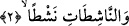

sökmenin bir çeşididir. Şu halde o kelimede mef’ûl-i mutlakın şartları mevcuddur
demektir. Bilindiği üzere bu şart, masdar ile onun âmilinin aynı olmasıdır. Çekip
çıkarmada “iğrak”, bu işleme dalmak ve bunda zirveye çıkmak demektir. Nitekim
Kamus’ta: “çekip çıkaran kimse, yayını o kadar çekti ki onu sap kısmına vardırdı”
anlamına geldiği ifâde edilmektedir.
Allah, bu âyette kâfirlerin ruhlarını cesedlerinden şiddetle söküp çıkaran melekler
zümresi üzerine yemin ediyor. Bu melekler, kâfirlerin canını zorla çeker koparırlar.
Yine bu melekler onların cesedlerinden ruhlarını parmak uçlarından, tırnaklarından ve
kılların altından başaşağı söküp çıkarıyorlar. Tıpkı toprağın her yöresine kök salmış
ağaçların yerden sökülüp çıkarılması gibi. Tıpkı çok taraklı bir şişin ıslak yüne batırılıp
yünün içerisinden şiddetle çıkarılması gibi. Tıpkı canlı hayvanın derisinin sırtından
yüzülmesi gibi. Yine tıpkı insana kılıçla bin veya daha fazla darbe vurulması gibi. İşte
Allah Teâlâ, bu melekler zümresi üzerine yemin ediyor. Burada kasdedilen melekler;
ölüm meleği ve onun azab meleklerinden olan yardımcılarıdır. Bunlar kâfirin ruhunu
söküp alırlarken onu, ucu Cehennem zehiriyle zehirlenmiş kargı ile dürterler. Ölmek
üzere olan kâfir, bütün karnının dikenlerle dolu olduğunu zanneder. Sanki ruhunun
iğnenin deliğinden çıkarıldığı hissine kapılır. Gökyüzünün yeryüzüne kapanmış
olduğunu ve kendisinin de bu ikisi arasında sıkışıp kaldığını zanneder. Kâfirin ruhu
ürpererek cesedinden sökülüp çıkarıldığında arı büyüklüğünde civaya benzer ve arı,
onun amelinin sûretinde olur. Zebaniler bu ruhu alırlar ve ona kabirde ve sicciynde azab
ederler. Bu azab rûhânî bir azabtır. Kıyamet kopunca sözünü ettiğimiz bu rûhâni azaba
cismânî azab da eklenir. Allah Teâlâ’nın, ve’n-nâziâti garkan ifâdesi kâfirlerin
ruhlarının nasıl kabzedileceğine -kelimelerin bizâtihî kendilerinin işâretiyle ve
mânâsıyla- işâret etmektedir.
2. Yavaşça çekenlere
Bu ifâde atıf yoluyla başka bir yemindir. “en-Nâşitât” kelimesinin kökü olan “neşt”,
herhangi bir şeyi yerinden yumuşaklıkla ve hoşça çekip almak demektir. “Neştan”
kelimesi masdar olmak üzere mansubtur. Bu âyette Allah müminlerin ruhlarını
bedenlerinden yumuşaklıkla ve hoş bir biçimde çekip alan meleklerin zümresi üzerine
yemin etmektedir. Bu melekler müminlerin ruhlarını tıpkı kuyudan kovanın çıkarıldığı
gibi rahatlıkla çıkarırlar. Anlamın bu olduğuna arapçadaki, “o kovayı kuyudan rahatlıkla
çıkardı” anlamındaki neşeta’d-delve mine’l-bi’ri deyimi işâret etmektedir. Yine bu
melekler müminlerin ruhlarını tıpkı kılın yağın içinden çıkarılması gibi ve su kabının
içinden herhangi bir damlanın damlaması gibi rahatlıkla çıkarıp alırlar.
Bu âyette kasdedilen melekler; yine ölüm meleği ve onun yardımcıları olan rahmet